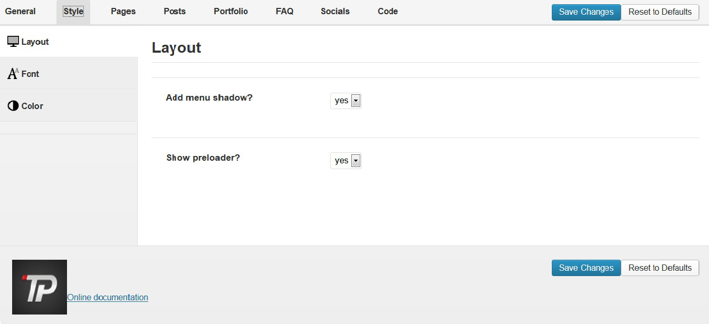
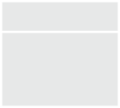
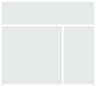
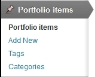

Thank you for purchasing this theme. If you have any questions that are beyond the scope of this help file, please feel free to email via the user page contact form. Thanks so much!
The theme can be installed by uploading it to your server via ftp in wp-content/themes folder. You can also archive(in zip) the theme's folder(after you've unarchived the package you've downloaded from Themeforest) and install it via Appearance > Themes > Install Themes tab. To use the theme you need to active it.
After installation you should see the following folder structure:
You can easily configure theme to look exactly like on a demo page. Once theme is activated, navigate to Appearance > Theme Options > General > 1-Click Demo Import and click "import" button.
That's it - your site is now ready!
Please refer to 1-Click Demo Import section to automatically setup Wordpress installation. All steps described below are configured by 1-Click Demo Import.
Before importing data and options you should set the appropriate values for the "Medium size" in "Image Size" section via Settings > Media. To gain the same result for portfolio list as on our demo site set the values to: Max Width: 210, Max Height: 150
You can import posts, pages, comments, categories and tags from your Wordpress export file via Tools > Import. You can use our demo data from Demo Content >panacea.wordpress.xml file.
If you have exported some previous Panacea Theme options, you can load it via General > Import/Export section in Appearance > Theme Options. You can use our demo options from Demo Content > theme_options.txt file
Please remember to activate the main menu via Appearance > Menus
In this chapter we will show you what you need to do to create a simple site using our theme. Deeper analysis on the functionality of the theme is provided in several next chapters. You can also see the usage showcase of the theme on our demo site
Go to Appearance > Theme Options and choose the logo icons via Media Library. Always remember to click the "Save changes" button after providing some changes via Theme Options screen.
Create pages for Your site via Pages > Add New menu. For the beginning we recommend to create Homepage and set it as the Wordpress Homepage via Pages section in Appearance > Theme Options.
When creating your pages, remember you can change the template of each of the pages via Page Attributes section in Pages > Add New
Activate your blog index and single post pages via Posts section in Appearance > Theme Options menu. In theme options you can also customize the content of these pages.
Create your portfolio via Portfolio items menu (the full discussion on creating the portfolio items and taxonomy is available here). After creating portfolio and the portfolio index page you can activate it via Portfolio section in Appearance > Theme Options menu.
Create your profile on social networking service and put your username on social field
Our theme provides the main menu functionality available via Appearance > Menus, where you can create and activate the navigation tree available on the top of the site.
To activate the dropdown menu you need to create The Main Navigation Menu, for drawing breadcrumbs the Breadcrumbs Menu will be used.
We provide 4 widget slots (one sidebar and three footer columns). You can add there any default Wordpress widget and any of our custom theme widgets
This theme is built upon Bootstrap framework and is fully responsive.
You can customize the css and javascript via Code section in Appearance > Theme Options menu. Don't forget to explore more advanced options of the theme.
There is a large amount of the powerfull shortcodes provided by our theme, which you can use on every single page on your site.
You can setup your page with global layout setting available via Appearance > Theme Options > Style menu. We provide 13 different background patterns.
Additionally every page/post/portfolio item layout can be configured separately via edit screen of the item - option "Use boxed layout" in the "Template settings" section.
You can turn on/off these elements globally via Appearance > Theme Options. You can setup different configuration for every page type - page, post, portfolio, faq via tab in theme options.
Additionally every page/post/portfolio item can be configured separately via edit screen of the item - options "Show title", "Show breadcrumbs" in the "Template settings" section.
You can access custom theme options via Appearance > Theme Options from wordpress admin bar. Most of the options are self-explanatory and also some help information is provided.
Basic logo and footer configuration.
The Import/Export tab allows you to save your current theme options to the text file or restore them from existing theme options export file.
All style setting are available for two modes: Basic color scheme and Distinctive color scheme You can configure global settings for background plus font and color of basic html elements like headers and links.
In this section you can also configure some custom style for Contact, Social, Newsletter and Testimonials widgets.
In this section you can set custom Mainpage on Your site.
You can set which page should be blog index.
We also provide you the mechanism to customize both blog index page and single post page. You can choose which elements (post information) will be displayed on these pages.
Collection page options: Posts per page (pager - how many posts should be displayed on a single blog index page), Date (show or hide date for every single post in the list), Image (show or hide images), Title (show or hide titles), Summary (show or hide excerpts), Categories (show or hide categories summary), Comments link (show or hide comments summary)
Single post page options: Date (show or hide date), Image (show or hide image), Title (show or hide title), Summary (show or hide excerpt), Categories (show or hide categories summary), Comments (show or hide comments summary), Comment form (show or hide comment form)
Portfolio elements can be configure analogously to posts.
You can set account number (UA-XXXXXXXX-X) for the Google Analytics module used for tracking the site.
In this section you can also set any custom CSS or Javascript code, which will be used on Your site with the highest priority.
You can add link to your profile on(Facebook ,Twitter ,etc...) .
The theme provides 2 basic templates for site pages - no sidebar (default) and right sidebar:
 The footer is built from 4 columns which gives you a flexible way to arrange the content of it.
Blog pages configuration is described in Options section.
The theme supports different post formats in order to change the appearance of the content. You can use standard, image, gallery, audio, video, aside, quote and link formats.
Typical appearance, the content will not be changed.
To use it, select "Image" from the "format" section. The featured image and meta data will be shown.
To use it, select "Gallery" from the "format" section. You can create the gallery for you post or use any Revolution Slider slideshow previously created. You can choose it from the additional post menu in "Gallery format settings" section.
To use it, select "Audio" from the "format" section. You will find the additional "Audio format settings" to upload .mp3 or .ogg/.oga self hosted files (you have to provide both formats for appropriate display across all browsers.). You can additionally provide the poster file.
To use it, select "Video" from the "format" section. You will find the additional "Video format settings". You can upload self hosted .m4v and .ogv files (you have to provide both formats for appropriate display across all browsers.). Additionally you can provide a 'direct link' to embed movie from popular services like Youtube, Vimeo or Dailymotion or use your own embed code.
To use it, select "Aside" from the "format" section. Your post content will be shown, your title not.
To use it, select "Quote" from the "format" section. You will find the additional "Quote format settings" to enter your quote. Your post title will be used as the quote source/author
To use it, select "Link" from the "format" section. You will find the additional "Quote format settings" to enter your link. Your URL will be shown and your post title will be used as the link text.
The theme comes with a custom post type for portfolio (works). Portfolio pages configuration is described in Options section.
Regular blog posts are separated from portfolio items - in the main Wordpress Admin menu you can find section Portfolio items
You can add new portfolio item via Portfolio items > Add New. Beside regular post elements like title, description, excerpt, featured image (which is very important - it will be used both on the list of works as well as on the single work page), you can also define client, external url (which will be used on the portfolio public page) and featured video (it will be displayed instead of the featured image on the single portfolio item page).
You can organize your works with portfolio categories and tags which are built using Wordpress custom taxonomy functionality (they are separated from regular Wordpress categories and tags and are
accessible via Portfolio items > Categories and Portfolio items > Tags).
On the single portfolio item page, portfolio categories will be used for the services information.
It's very important to understand the mechanism of building the page structure using shortcodes. Each row of the content should be built with the [row] shortcode and then each row divided into columns with the [x_column] shortcodes (please see bootstrap documentation to see the meaning of the "row" and "spanX" classes). It gives you a very flexible way to arrange the content and makes you sure everything will look exactly as you wish. To make the row fullwidth wrap the [row] shortcode into the [full_width] shortcode.
You can find full shortcode documentation on our demo site.
Theme comes with automatic update feature. When new version is available, notice will be visible in Appearance - Themes page. View video tutorial.
Note that modified theme files will be deleted.
CSS Structure section describes how to modify theme without loosing any changes.
There are 16 PSD files included in the project.
Each PSD file is of course layered, layers are grouped into directories. If you'd like to change anything in the page layout, please put jpg/png image in HTML/img directory.
We've included style.css which contains all necessary styles.
Main CSS file: style.css includes:
Here's the list of external sources we have used to create our theme: